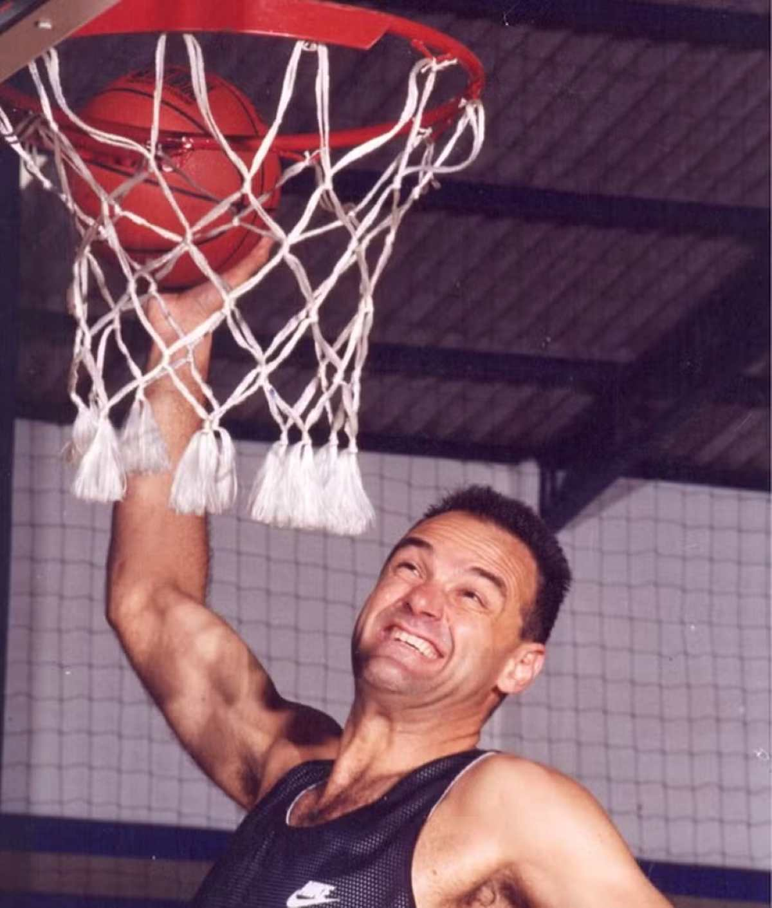
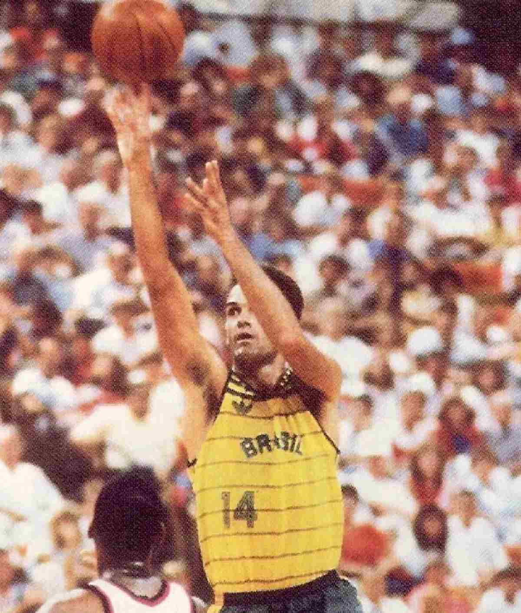

Repórter Davi
Notícias de Feira de Santana e Região
Repórter Davi
Notícias de Feira de Santana e Região
Em nota, a família de Oscar lamentou a morte e lembrou sua trajetória. O velório e enterro serão restritos à família e amigos.
Publicado em 17/04/2026

Foto: Reprodução/Instagram
O ex-jogador de basquete Oscar Schmidt morreu nesta sexta-feira (17), aos 68 anos, em Santana do Parnaíba, na Grande São Paulo, após passar mal.
Ele foi levado ao Hospital e Maternidade Municipal Santa Ana (HMSA). Em nota, a família de Oscar lamentou a morte e lembrou sua trajetória. O velório e enterro serão restritos à família e amigos.
“É com profundo pesar que comunicamos o falecimento de Oscar Schmidt, um dos maiores nomes da história do basquete mundial e uma figura de imenso significado humano e esportivo. Ao longo de mais de 15 anos, Oscar enfrentou com coragem, dignidade e resiliência a sua batalha contra um tumor cerebral, mantendo-se como exemplo de determinação, generosidade e amor à vida.
Reconhecido por sua trajetória brilhante dentro das quadras e por sua personalidade marcante fora delas, Oscar deixa um legado que transcende o esporte e inspira gerações de atletas e admiradores no Brasil e no mundo. A despedida se dará de forma reservada, restrita aos familiares, em respeito ao desejo da família por um momento íntimo de recolhimento.
Os familiares agradecem, sensibilizados, todas as manifestações de carinho, respeito e solidariedade recebidas, e solicitam a compreensão de todos quanto à necessidade de privacidade neste momento de luto. Seu legado permanecerá vivo na memória coletiva e na história do esporte, assim como no coração de todos que foram tocados por sua trajetória.”
No dia 8 de abril, Oscar foi dos homenageados pelo Comitê Olímpico do Brasil na cerimônia do Hall da Fama, no Copacabana Palace, no Rio de Janeiro. Segundo o jornal “O Globo”, o ídolo não esteve presente no evento porque se recuperava de uma cirurgia. Com isso, foi representado por seu filho Felipe Schmidt, que falou sobre a emoção de ter o pai celebrado pelo COB.
“A gente está honradíssimo de estar aqui nesse momento, porque a gente sabe de tudo o que o meu pai se dedicou ao basquete, principalmente a seleção brasileira e ao COB, porque uma das suas maiores felicidades era defender o Brasil nas Olimpíadas. Estar aqui para receber essa homenagem é o último capítulo de uma carreira cheia de vitórias”, disse Felipe Schmidt.
Ainda conforme o jornal O Globo, o filho preferiu não entrar em detalhes sobre a cirurgia e o estado de saúde do pai, mas disse que o ídolo estava bem, “só um pouco cansado”.
Em 2011, foi diagnosticado com câncer no cérebro. Passou por cirurgias, mas a doença persistiu. Em 2022, afirmou que havia interrompido por conta própria o tratamento de quimioterapia. Após repercussão, esclareceu a situação e anunciou que estava curado.
Oscar Daniel Bezerra Schmidt nasceu em 16 de fevereiro de 1958, em Natal, no Rio Grande do Norte, e é reconhecido como um dos maiores jogadores de basquete de todos os tempos no Brasil e no mundo.
Conhecido como “Mão Santa” e eterno camisa 14 da seleção brasileira, foi um dos principais responsáveis por popularizar o basquete no país.
Em cinco participações olímpicas, Moscou 1980, Los Angeles 1984, Seul 1988, Barcelona 1992 e Atlanta 1996, marcou 1.093 pontos e se tornou o maior cestinha da história dos Jogos.
Oscar foi considerado um dos melhores da história, integrando também o Hall da Fama da Federação Internacional da modalidade (Fiba) e o Hall da Fama da NBA, mesmo sem nunca ter atuado oficialmente na liga americana.

Foto: Reprodução/Instagram
O sonho de Oscar era ser jogador de futebol, mas, por causa da altura, migrou para o basquete. Em Brasília, começou no Colégio Salesiano, sob orientação do técnico Zezão, e depois seguiu para o Clube Unidade Vizinhança, onde foi treinado por Laurindo Miura.
Em 1974, aos 16 anos, mudou-se para São Paulo e passou a atuar no time infantojuvenil do Palmeiras. Após se destacar, foi convocado para a seleção brasileira de base e, posteriormente, para a principal.
Chamou a atenção do técnico Cláudio Mortari, que o levou para o Sírio. Em 1979, conquistou o Mundial de Clubes de Basquete, seu primeiro título de grande expressão. No ano seguinte, disputou os Jogos Olímpicos de Moscou com a seleção brasileira, que terminou na quinta colocação.
No início dos anos 1980, transferiu-se para o JuveCaserta, da Itália, a pedido do técnico Bogdan Tanjevic. Permaneceu por 11 temporadas na liga italiana, considerada à época a segunda mais forte do mundo, atrás apenas da NBA.

Foto: Reprodução/Instagram
Após os Jogos Olímpicos de Los Angeles 1984, foi draftado pelo New Jersey Nets, mas recusou o contrato para continuar defendendo a seleção brasileira. Em 1987, conquistou a medalha de ouro no Pan-Americano de Indianápolis, após vitória sobre os Estados Unidos na final.
Pela seleção, acumulou recordes ao longo de quase duas décadas, com cinco participações consecutivas em Olimpíadas, além de marcas como maior pontuador da história dos Jogos e melhor média de pontos.
Na década de 1990, recebeu novo convite para atuar na NBA, mas voltou a recusar. Após passagem pelo Fórum, de Valladolid, na Espanha, retornou ao Brasil, onde jogou pelo Corinthians e outros clubes. Encerrou a carreira em 2003, no Flamengo.
Oscar Schmidt somou 49.737 pontos ao longo da carreira e, por anos, foi o maior pontuador da história do basquete. Em 2024, foi superado por LeBron James, que alcançou 49.760 pontos em jogos oficiais.
Pelos clubes, atuou por Palmeiras, Sírio, América, JuveCaserta, Pavia, Fórum/Valladolid, Corinthians, Bandeirantes, Mackenzie/Microcamp e Flamengo. Ao todo, conquistou oito títulos nacionais como jogador amador e profissional.
Pela seleção brasileira, venceu três Sul-Americanos, duas Copas América e um Pan-Americano.
Oscar é irmão do apresentador Tadeu Schmidt e tio de Bruno Schmidt.
É o maior cestinha da história da seleção brasileira, com 7.693 pontos, e o único jogador a ultrapassar 1.000 pontos em Olimpíadas.
Foi incluído na lista dos 100 maiores jogadores de basquete de todos os tempos em livro organizado por Alex Sachare e teve a carreira retratada em obras publicadas na Europa.